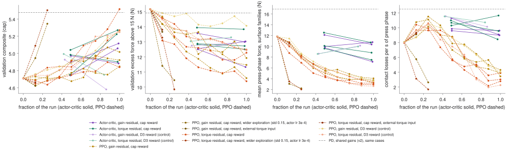

Every learned controller of reports D3 and D4 tracks better and limits impact forces better than the tuned PD, and every one of them is worse at staying in contact: contact losses during a press, the press deficit, and the recovery after a blocked reference is released. The saved episodes show a learned flinch at the reward's soft force limit, and the training reward evaluated on saved episodes prefers yielding on blocked targets (which no optimiser found) and intermittent light contact on the task family (which the reward asked for). The advisor's directive: train the residual and PPO arms in parallel, audit the reward on the situations that matter, set the force cap to what pick-and-place, peg insertion and connector tasks need, and run a contact-focused study that also examines the model: what the policy needs to sense contact, what output parameterisation produces compliance, whether the feature encoding matters, and whether the outputs are smooth enough for hardware.
Three defects of the harness were found on the way and are corrected here (ADR 0007): table-surface blocked references had no blocked phase at all (their training windows contained no block, their recovery metric was undefined); in the wall branch of the blocked and contact families the hand and the forearm reached the wall before the tool, so those cases measured unsensed link collisions; and two validation cases per family had misranked the D4 contact arms. The wall cases are now a genuine tool block (tool contact 93 to 98% of the blocked phase, no link contact), and they are hard: the tuned PD pushes with 50 to 200 N against the wall.
Force cap. Sustained contact force capped at 15 N, a hardware-like collision reaction modelled at 25 N of the 20 ms filtered force. Connector datasheets list 20 to 30 N mating forces, third-party Franka software defaults its collision force threshold to 30 N; pick-and-place and compliant peg insertion need a few newtons. New protocol metrics: excess force above 15 N, contact losses per second of press phase, and a composite under the cap (the v2 composite with the force terms at the cap and the sustained peak); the v2 metrics stay for continuity.
Reward. The D3 actor-critic reward with the force penalty from 15 N, plus privileged contact-maintenance terms while the reference is inside a surface: a 5 N Gaussian kernel on the normal force around the force the commanded depth implies (5 N + 1000 N/m x depth, capped at 15 N), the tangential tool-tracking kernel (1 cm), and the joint kernel switched off (it asks for an infeasible depth). A lost contact scores about zero on the force kernel. The actor stays proprioceptive; the terms use the reference's tool path, the surface normal and the contact force, all simulation quantities.
Parameterisations. The torque residual of D3 (tanh-bounded, half the torque limit) against a gain residual: bounded per-joint multipliers of the shared PD gains (stiffness 0.02 to 1.5, damping 0.3 to 2.0, neutral at 1) plus the same torque residual. A D3 checkpoint converts exactly to the gain residual (gain heads neutral), so every arm starts from the same controller.
Windows and mixture. Contact-focused mixture (hold 0.1, free 0.15, contact 0.35, blocked 0.4; the task family stays held out). Half of the surface windows start 0.1 to 0.2 s before the reference crosses the surface, so the window is spent on the block and, with 4 s windows, on the release. Both training methods warm-start from the D3 residual (runs/d4/pd_residual_acmed_s02_lowrate-s0). Actor-critic: 450 iterations of 24 windows of 2 s, finite-difference plant gradients with median clipping, as in D3. PPO: 200 updates of 64 windows of 4 s, 10 ms decisions, AR(1) exploration noise (correlation 0.5), the 25 N filtered reflex charged per crossing without ending the window, no drift penalty. Validation every 50 iterations or 25 updates on 32 fixed cases (two per free-space family, eight per surface family), selection on the composite under the cap.
Stage 1 arms. {actor-critic, PPO} x {cap reward, D3 reward} x {torque residual, gain residual}: three seeds for the cap arms, one for the D3-reward controls. Stage 2 adds, on the better parameterisation, an external-torque estimate from the robot's own model as an input (tau applied minus M qdd minus bias, the signal the Panda exposes on hardware), random Fourier features, and a 20 ms first-order filter on the held output.
Before training, the training reward is evaluated on identical windows for fixed controllers, including a privileged exemplar of the wanted behaviour (the shared PD with its gains scaled to 0.3 only while the reference is inside the surface). A reward that does not rank the exemplar first cannot be optimised toward it.
| Family | Controller | D3 reward (per step) | Cap reward (per step) | Mean force inside (N) | Contact fraction inside | Losses per s inside | Peak force (N) |
|---|---|---|---|---|---|---|---|
| Contact (press and slide) | PD, shared gains | 0.145 | 0.536 | 23.3 | 0.82 | 13.3 | 371 |
| Contact (press and slide) | PD, gains x0.3 everywhere | 0.196 | 0.619 | 13.4 | 0.67 | 10.4 | 341 |
| Contact (press and slide) | PD, gains x0.3 only while the reference is inside (privileged exemplar) | 0.272 | 0.683 | 13.6 | 0.69 | 10.1 | 338 |
| Contact (press and slide) | PD + residual, actor-critic (D3 warm start) | -0.002 | -0.044 | 25.7 | 0.74 | 9.4 | 246 |
| Contact (press and slide) | PPO, contact families (D4, v2) | 0.115 | 0.121 | 19.9 | 0.62 | 6.2 | 132 |
| Blocked target | PD, shared gains | -3.749 | -4.910 | 69.9 | 0.96 | 0.8 | 508 |
| Blocked target | PD, gains x0.3 everywhere | -0.268 | 0.135 | 23.6 | 0.79 | 0.8 | 589 |
| Blocked target | PD, gains x0.3 only while the reference is inside (privileged exemplar) | -0.129 | 0.221 | 23.5 | 0.79 | 0.7 | 509 |
| Blocked target | PD + residual, actor-critic (D3 warm start) | -5.093 | -6.767 | 75.3 | 0.92 | 1.3 | 232 |
| Blocked target | PPO, contact families (D4, v2) | -2.923 | -4.178 | 60.0 | 0.85 | 1.1 | 195 |
One line per run; seeds share a colour.

| Group | Controller | Composite v2 | Composite (15 N cap) | Excess force above 30 N (N) | Excess force above 15 N (N) | Peak force (N) | Sustained peak, 20 ms (N) | Position RMSE (rad) | Diverged |
|---|---|---|---|---|---|---|---|---|---|
| In-distribution families | PD, shared gains (v2) | 4.29 | 5.95 | 6.53 | 10.4 | 142 | 81.3 | 0.0314 | 0 |
| In-distribution families | PD + residual, actor-critic (D3 warm start) | 3.33 | 4.96 | 7.05 | 10.4 | 89.7 | 56.9 | 0.0231 | 0 |
| In-distribution families | PPO, gain residual, cap reward | 3.3 | 4.79 | 6.18 | 9.32 | 87.7 | 54.7 | 0.0234 | 0 |
| In-distribution families | PPO, torque residual, cap reward | 3.36 | 4.83 | 6.15 | 9.23 | 86.2 | 54.1 | 0.0235 | 0 |
| In-distribution families | PPO, gain residual, D3 reward (control) | 3.33 | 4.98 | 7.1 | 10.5 | 90.4 | 57.6 | 0.0231 | 0 |
| In-distribution families | PPO, torque residual, D3 reward (control) | 3.33 | 4.98 | 7.1 | 10.5 | 90.4 | 57.6 | 0.0231 | 0 |
| Payload 3 kg | PD, shared gains (v2) | 9.9 | 13.6 | 19 | 27.3 | 235 | 120 | 0.0565 | 0 |
| Payload 3 kg | PD + residual, actor-critic (D3 warm start) | 4.57 | 7.58 | 10.5 | 19.3 | 118 | 66.2 | 0.0208 | 0 |
| Payload 3 kg | PPO, gain residual, cap reward | 4.37 | 7.08 | 9.04 | 16.9 | 118 | 66.3 | 0.0205 | 0 |
| Payload 3 kg | PPO, torque residual, cap reward | 4.3 | 7 | 9.04 | 17 | 117 | 65.5 | 0.0208 | 0 |
| Payload 3 kg | PPO, gain residual, D3 reward (control) | 4.57 | 7.59 | 10.5 | 19.3 | 118 | 66.8 | 0.0208 | 0 |
| Payload 3 kg | PPO, torque residual, D3 reward (control) | 4.57 | 7.59 | 10.5 | 19.3 | 118 | 66.8 | 0.0208 | 0 |
| Held-out robot instances (doubled deviations) | PD, shared gains (v2) | 4.48 | 6.34 | 6.78 | 11.7 | 165 | 93.1 | 0.0348 | 0 |
| Held-out robot instances (doubled deviations) | PD + residual, actor-critic (D3 warm start) | 3.86 | 6.05 | 8.8 | 14.1 | 108 | 68.6 | 0.0268 | 0 |
| Held-out robot instances (doubled deviations) | PPO, gain residual, cap reward | 3.78 | 5.74 | 7.73 | 12.7 | 104 | 65.9 | 0.0271 | 0 |
| Held-out robot instances (doubled deviations) | PPO, torque residual, cap reward | 3.91 | 5.83 | 7.6 | 12.4 | 104 | 65.5 | 0.0272 | 0 |
| Held-out robot instances (doubled deviations) | PPO, gain residual, D3 reward (control) | 3.88 | 6.08 | 8.85 | 14.1 | 108 | 69.3 | 0.0268 | 0 |
| Held-out robot instances (doubled deviations) | PPO, torque residual, D3 reward (control) | 3.88 | 6.08 | 8.85 | 14.1 | 108 | 69.3 | 0.0268 | 0 |
| Regime | Metric | PD, shared gains (v2) | PD + residual, actor-critic (D3 warm start) | PPO, gain residual, cap reward | PPO, torque residual, cap reward | PPO, gain residual, D3 reward (control) | PPO, torque residual, D3 reward (control) |
|---|---|---|---|---|---|---|---|
| Hold | Position RMSE (rad) | 0.0167 | 0.00613 (-0.011*) | 0.00648 (-0.01*) | 0.00679 (-0.0099*) | 0.00614 (-0.011*) | 0.00614 (-0.011*) |
| Hold | Peak deflection under 10 N pulse (m) | 0.016 | 0.0118 (-0.0042*) | 0.0125 (-0.0035*) | 0.0124 (-0.0036*) | 0.0119 (-0.0041*) | 0.0119 (-0.0041*) |
| Hold | Torque rate RMS (Nm/s) | 48.7 | 43.4 (-5.3*) | 75.6 (27*) | 75.4 (27*) | 75.2 (26*) | 75.2 (26*) |
| Free joint-space motion | Position RMSE (rad) | 0.0191 | 0.0134 (-0.0057*) | 0.0144 (-0.0047*) | 0.0138 (-0.0053*) | 0.0134 (-0.0057*) | 0.0134 (-0.0057*) |
| Free joint-space motion | Torque rate RMS (Nm/s) | 52.9 | 44.5 (-8.4*) | 71.6 (19*) | 68.4 (15*) | 69 (16*) | 69 (16*) |
| Policy-like targets | Position RMSE (rad) | 0.0553 | 0.047 (-0.0084*) | 0.047 (-0.0083*) | 0.0474 (-0.0079*) | 0.047 (-0.0083*) | 0.047 (-0.0083*) |
| Policy-like targets | Torque rate RMS (Nm/s) | 1.77e+03 | 1.57e+03 (-2e+02*) | 1.59e+03 (-1.8e+02*) | 1.58e+03 (-1.8e+02*) | 1.58e+03 (-1.8e+02*) | 1.58e+03 (-1.8e+02*) |
| Step targets | Position RMSE (rad) | 0.0444 | 0.0382 (-0.0062*) | 0.0383 (-0.0061*) | 0.0385 (-0.0059*) | 0.0383 (-0.0061*) | 0.0383 (-0.0061*) |
| Step targets | Settling time after step (s) | 0.663 | 0.391 (-0.27*) | 0.411 (-0.25*) | 0.409 (-0.25*) | 0.394 (-0.27*) | 0.394 (-0.27*) |
| Step targets | Step overshoot (-) | 0.0176 | 0.0139 (-0.0037) | 0.017 (-0.00065) | 0.0144 (-0.0032) | 0.0146 (-0.003) | 0.0146 (-0.003) |
| Contact (tilt, depth, slide) | Excess contact force above 30 N (mean while in contact) (N) | 8.95 | 5.62 (-3.3*) | 5.52 (-3.4*) | 5.07 (-3.9*) | 5.85 (-3.1*) | 5.85 (-3.1) |
| Contact (tilt, depth, slide) | Excess contact force above the 15 N cap (mean while in contact) (N) | 16.1 | 12.5 (-3.6) | 11.9 (-4.3) | 11 (-5.2*) | 12.8 (-3.4) | 12.8 (-3.4) |
| Contact (tilt, depth, slide) | Peak normal force (N) | 169 | 106 (-63*) | 104 (-65*) | 102 (-68*) | 107 (-62*) | 107 (-62*) |
| Contact (tilt, depth, slide) | Peak of the 20 ms low-pass filtered normal force (sustained force) (N) | 88.8 | 60.4 (-28*) | 59.6 (-29*) | 58.4 (-30*) | 61.7 (-27*) | 61.7 (-27) |
| Contact (tilt, depth, slide) | Feasible-direction tool error (m) | 0.0403 | 0.0222 (-0.018*) | 0.0229 (-0.017*) | 0.0226 (-0.018*) | 0.0224 (-0.018*) | 0.0224 (-0.018*) |
| Contact (tilt, depth, slide) | Press-phase force deficit below 5 N (N) | 1.39 | 0.333 (-1.1*) | 0.61 (-0.78) | 0.694 (-0.7) | 0.342 (-1*) | 0.342 (-1*) |
| Contact (tilt, depth, slide) | Contact losses of 5 ms or more during contact phase (-) | 9.5 | 18.4 (8.9) | 24.1 (15) | 30.1 (21) | 17.1 (7.6) | 18.1 (8.6) |
| Contact (tilt, depth, slide) | Contact losses of 5 ms or more per second of press phase (1/s) | 4.33 | 8.58 (4.2) | 9.86 (5.5) | 11.7 (7.4) | 8.06 (3.7) | 8.42 (4.1) |
| Blocked reference | Excess contact force above 30 N (mean while in contact) (N) | 32.7 | 43 (10*) | 37.3 (4.5) | 37.5 (4.7) | 43 (10*) | 43 (10*) |
| Blocked reference | Excess contact force above the 15 N cap (mean while in contact) (N) | 45.6 | 57.2 (12*) | 51.3 (5.7*) | 51.4 (5.8*) | 57.2 (12*) | 57.2 (12*) |
| Blocked reference | Peak normal force (N) | 134 | 127 (-7.3) | 125 (-8.8) | 124 (-10) | 128 (-6.5) | 128 (-6.5) |
| Blocked reference | Peak of the 20 ms low-pass filtered normal force (sustained force) (N) | 90.4 | 92.8 (2.4) | 88.9 (-1.5) | 88.6 (-1.8) | 93.2 (2.8) | 93.2 (2.8) |
| Blocked reference | Feasible-direction tool error (m) | 0.0376 | 0.0228 (-0.015*) | 0.0243 (-0.013*) | 0.0238 (-0.014*) | 0.0228 (-0.015*) | 0.0228 (-0.015*) |
| Blocked reference | Recovery after a blocked reference returns (s) | 0.367 | 0.668 (0.3) | 0.543 (0.18) | 0.65 (0.28) | 0.612 (0.24) | 0.612 (0.24) |
| Blocked reference | Apparent stiffness: mean normal force per metre of reference depth while blocked (after the first 0.3 s of contact) (N/m) | 1.18e+03 | 1.44e+03 (2.6e+02*) | 1.31e+03 (1.3e+02) | 1.31e+03 (1.3e+02) | 1.44e+03 (2.6e+02*) | 1.44e+03 (2.6e+02*) |
| Task sequence | Excess contact force above 30 N (mean while in contact) (N) | 3.86 | 0.171 (-3.7*) | 0.138 (-3.7*) | 0.132 (-3.7*) | 0.173 (-3.7*) | 0.173 (-3.7*) |
| Task sequence | Excess contact force above the 15 N cap (mean while in contact) (N) | 10.7 | 2.15 (-8.6*) | 1.56 (-9.1*) | 1.52 (-9.2*) | 2.17 (-8.5*) | 2.17 (-8.5*) |
| Task sequence | Peak normal force (N) | 123 | 36.5 (-86*) | 33.6 (-89*) | 32.9 (-90*) | 36.4 (-86*) | 36.4 (-86*) |
| Task sequence | Peak of the 20 ms low-pass filtered normal force (sustained force) (N) | 64.7 | 17.5 (-47*) | 15.7 (-49*) | 15.3 (-49*) | 17.7 (-47*) | 17.7 (-47*) |
| Task sequence | Feasible-direction tool error (m) | 0.0241 | 0.014 (-0.01*) | 0.0149 (-0.0092*) | 0.0152 (-0.009) | 0.014 (-0.01*) | 0.014 (-0.01*) |
| Task sequence | Press-phase force deficit below 5 N (N) | 0.244 | 1.45 (1.2*) | 1.94 (1.7*) | 2.06 (1.8*) | 1.45 (1.2*) | 1.45 (1.2*) |
| Task sequence | Contact losses of 5 ms or more per second of press phase (1/s) | 11.7 | 13.3 (1.6) | 13.6 (2) | 14.6 (3) | 14.4 (2.7) | 14.3 (2.6) |
| Regime | Metric | PD, shared gains (v2) | PD + residual, actor-critic (D3 warm start) | PPO, gain residual, cap reward | PPO, torque residual, cap reward | PPO, gain residual, D3 reward (control) | PPO, torque residual, D3 reward (control) |
|---|---|---|---|---|---|---|---|
| Free joint-space motion | Position RMSE (rad) | 0.0486 | 0.0239 (-0.025*) | 0.0246 (-0.024*) | 0.0247 (-0.024*) | 0.024 (-0.025*) | 0.024 (-0.025*) |
| Free joint-space motion | Torque rate RMS (Nm/s) | 58 | 47.2 (-11*) | 75.3 (17*) | 71.8 (14*) | 72.8 (15*) | 72.8 (15*) |
| Contact (tilt, depth, slide) | Excess contact force above 30 N (mean while in contact) (N) | 11.6 | 5.97 (-5.6*) | 5.12 (-6.5*) | 5.14 (-6.5*) | 6.04 (-5.6*) | 6.04 (-5.6) |
| Contact (tilt, depth, slide) | Excess contact force above the 15 N cap (mean while in contact) (N) | 22 | 16.8 (-5.2) | 14.6 (-7.3) | 14.8 (-7.2) | 16.9 (-5.1) | 16.9 (-5.1) |
| Contact (tilt, depth, slide) | Peak normal force (N) | 292 | 152 (-1.4e+02*) | 149 (-1.4e+02*) | 150 (-1.4e+02*) | 152 (-1.4e+02*) | 152 (-1.4e+02*) |
| Contact (tilt, depth, slide) | Peak of the 20 ms low-pass filtered normal force (sustained force) (N) | 136 | 81.2 (-55*) | 83 (-53*) | 80.7 (-55*) | 82.3 (-54*) | 82.3 (-54*) |
| Contact (tilt, depth, slide) | Feasible-direction tool error (m) | 0.0502 | 0.0233 (-0.027*) | 0.0231 (-0.027*) | 0.0224 (-0.028*) | 0.0233 (-0.027*) | 0.0233 (-0.027*) |
| Contact (tilt, depth, slide) | Press-phase force deficit below 5 N (N) | 1.16 | 0.546 (-0.61) | 0.417 (-0.74) | 0.523 (-0.64) | 0.539 (-0.62) | 0.539 (-0.62) |
| Contact (tilt, depth, slide) | Contact losses of 5 ms or more during contact phase (-) | 3.75 | 9.38 (5.6) | 12.5 (8.8*) | 13 (9.2*) | 7.25 (3.5) | 7.25 (3.5) |
| Contact (tilt, depth, slide) | Contact losses of 5 ms or more per second of press phase (1/s) | 2.17 | 4.92 (2.8) | 7.09 (4.9*) | 7.2 (5*) | 3.9 (1.7) | 3.9 (1.7) |
| Blocked reference | Excess contact force above 30 N (mean while in contact) (N) | 46.3 | 35 (-11*) | 30.2 (-16*) | 30.2 (-16*) | 34.9 (-11) | 34.9 (-11) |
| Blocked reference | Excess contact force above the 15 N cap (mean while in contact) (N) | 57.2 | 49.3 (-7.9) | 44.5 (-13) | 44.4 (-13) | 49.3 (-7.9) | 49.3 (-7.9) |
| Blocked reference | Peak normal force (N) | 117 | 134 (17) | 133 (16) | 131 (14) | 133 (17) | 133 (17) |
| Blocked reference | Peak of the 20 ms low-pass filtered normal force (sustained force) (N) | 82.8 | 82.6 (-0.14) | 79.3 (-3.4) | 79.3 (-3.4) | 82.7 (-0.1) | 82.7 (-0.1) |
| Blocked reference | Feasible-direction tool error (m) | 0.0847 | 0.0254 (-0.059*) | 0.0255 (-0.059*) | 0.0253 (-0.059*) | 0.0255 (-0.059*) | 0.0255 (-0.059*) |
| Blocked reference | Recovery after a blocked reference returns (s) | 1.57 | 0.639 (-0.94*) | 0.575 (-1*) | 0.51 (-1.1*) | 0.639 (-0.94*) | 0.639 (-0.94*) |
| Blocked reference | Apparent stiffness: mean normal force per metre of reference depth while blocked (after the first 0.3 s of contact) (N/m) | 1.47e+03 | 1.27e+03 (-2e+02) | 1.16e+03 (-3.1e+02) | 1.15e+03 (-3.2e+02) | 1.27e+03 (-2e+02) | 1.27e+03 (-2e+02) |
| Task sequence | Excess contact force above 30 N (mean while in contact) (N) | 18.2 | 1.01 (-17*) | 0.85 (-17*) | 0.839 (-17*) | 1.01 (-17*) | 1.01 (-17*) |
| Task sequence | Excess contact force above the 15 N cap (mean while in contact) (N) | 29.8 | 11 (-19*) | 8.67 (-21*) | 8.6 (-21*) | 10.9 (-19*) | 10.9 (-19*) |
| Task sequence | Peak normal force (N) | 297 | 68.6 (-2.3e+02*) | 70.9 (-2.3e+02*) | 70.3 (-2.3e+02*) | 68.7 (-2.3e+02*) | 68.7 (-2.3e+02*) |
| Task sequence | Peak of the 20 ms low-pass filtered normal force (sustained force) (N) | 140 | 34.9 (-1e+02*) | 36.6 (-1e+02*) | 36.4 (-1e+02*) | 35.4 (-1e+02*) | 35.4 (-1e+02*) |
| Task sequence | Feasible-direction tool error (m) | 0.0636 | 0.0179 (-0.046*) | 0.0168 (-0.047*) | 0.017 (-0.047*) | 0.0179 (-0.046*) | 0.0179 (-0.046*) |
| Task sequence | Press-phase force deficit below 5 N (N) | 0 | 0 (0) | 0 (0) | 0 (0) | 0 (0) | 0 (0) |
| Task sequence | Contact losses of 5 ms or more per second of press phase (1/s) | 0 | 1.48 (1.5*) | 2.5 (2.5*) | 2.32 (2.3*) | 1.15 (1.2*) | 1.15 (1.2*) |
| Regime | Metric | PD, shared gains (v2) | PD + residual, actor-critic (D3 warm start) | PPO, gain residual, cap reward | PPO, torque residual, cap reward | PPO, gain residual, D3 reward (control) | PPO, torque residual, D3 reward (control) |
|---|---|---|---|---|---|---|---|
| Free joint-space motion | Position RMSE (rad) | 0.0184 | 0.0136 (-0.0047) | 0.0149 (-0.0035) | 0.0145 (-0.0039) | 0.0136 (-0.0047) | 0.0136 (-0.0047) |
| Free joint-space motion | Torque rate RMS (Nm/s) | 51.5 | 43.7 (-7.9*) | 70.9 (19*) | 67.2 (16*) | 67.6 (16*) | 67.6 (16*) |
| Policy-like targets | Position RMSE (rad) | 0.0612 | 0.0519 (-0.0093*) | 0.0518 (-0.0094*) | 0.0524 (-0.0089*) | 0.0519 (-0.0093*) | 0.0519 (-0.0093*) |
| Policy-like targets | Torque rate RMS (Nm/s) | 1.89e+03 | 1.66e+03 (-2.2e+02*) | 1.67e+03 (-2.2e+02*) | 1.66e+03 (-2.2e+02*) | 1.67e+03 (-2.2e+02*) | 1.67e+03 (-2.2e+02*) |
| Contact (tilt, depth, slide) | Excess contact force above 30 N (mean while in contact) (N) | 8.01 | 7.82 (-0.2) | 7.86 (-0.16) | 7.26 (-0.75) | 8.03 (0.019) | 8.03 (0.019) |
| Contact (tilt, depth, slide) | Excess contact force above the 15 N cap (mean while in contact) (N) | 15.6 | 15 (-0.63) | 13.9 (-1.7) | 13 (-2.6) | 15.1 (-0.48) | 15.1 (-0.48) |
| Contact (tilt, depth, slide) | Peak normal force (N) | 217 | 112 (-1.1e+02*) | 108 (-1.1e+02*) | 106 (-1.1e+02*) | 113 (-1e+02*) | 113 (-1e+02*) |
| Contact (tilt, depth, slide) | Peak of the 20 ms low-pass filtered normal force (sustained force) (N) | 113 | 63.8 (-49*) | 62.6 (-50*) | 61.6 (-51*) | 65 (-48*) | 65 (-48*) |
| Contact (tilt, depth, slide) | Feasible-direction tool error (m) | 0.022 | 0.0205 (-0.0016) | 0.0212 (-0.00077) | 0.0211 (-0.00094) | 0.0206 (-0.0014) | 0.0206 (-0.0014) |
| Contact (tilt, depth, slide) | Press-phase force deficit below 5 N (N) | 0.784 | 0.746 (-0.038) | 0.952 (0.17) | 0.992 (0.21) | 0.763 (-0.021) | 0.763 (-0.021) |
| Contact (tilt, depth, slide) | Contact losses of 5 ms or more during contact phase (-) | 21.6 | 14.6 (-7) | 20.5 (-1.1) | 23.1 (1.5) | 13.5 (-8.1) | 13.6 (-8) |
| Contact (tilt, depth, slide) | Contact losses of 5 ms or more per second of press phase (1/s) | 10.4 | 7 (-3.4) | 7.94 (-2.5) | 8.74 (-1.7) | 6.51 (-3.9) | 6.56 (-3.8) |
| Blocked reference | Excess contact force above 30 N (mean while in contact) (N) | 19.1 | 27.4 (8.3) | 23.1 (4) | 23.1 (4) | 27.4 (8.3) | 27.4 (8.3) |
| Blocked reference | Excess contact force above the 15 N cap (mean while in contact) (N) | 31.2 | 41.4 (10) | 36.8 (5.6) | 36.8 (5.6) | 41.3 (10) | 41.3 (10) |
| Blocked reference | Peak normal force (N) | 112 | 103 (-8.8) | 101 (-12) | 101 (-11) | 104 (-8.1) | 104 (-8.2) |
| Blocked reference | Peak of the 20 ms low-pass filtered normal force (sustained force) (N) | 73.6 | 73.4 (-0.23) | 69.2 (-4.4) | 69.5 (-4.2) | 73.7 (0.038) | 73.7 (0.036) |
| Blocked reference | Feasible-direction tool error (m) | 0.0431 | 0.023 (-0.02*) | 0.0247 (-0.018) | 0.0245 (-0.019) | 0.023 (-0.02*) | 0.023 (-0.02) |
| Blocked reference | Recovery after a blocked reference returns (s) | 0.823 | 0.759 (-0.064) | 0.676 (-0.15) | 0.844 (0.022) | 0.761 (-0.062) | 0.761 (-0.062) |
| Blocked reference | Apparent stiffness: mean normal force per metre of reference depth while blocked (after the first 0.3 s of contact) (N/m) | 884 | 1.13e+03 (2.5e+02) | 1.03e+03 (1.5e+02) | 1.03e+03 (1.4e+02) | 1.13e+03 (2.5e+02) | 1.13e+03 (2.5e+02) |